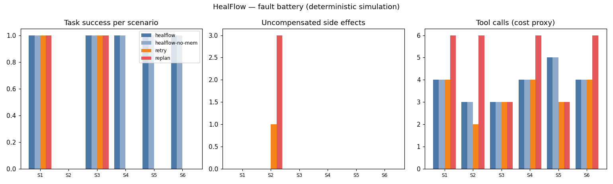

A model-agnostic, self-healing runtime for agentic workflows
Agentic workflows fail constantly: APIs go down, schemas drift, intermediate reasoning goes wrong, transactions half-complete. Retries and LLM replanning treat symptoms — and a bad recovery can repeat charges, corrupt state, or cascade.
Retry re-executes the symptom instead of diagnosing the cause (it cannot fix schema drift or permanent corruption). Replanning restarts from scratch with no memory of the failure — re-running external side effects (the benchmark triple-charges a payment workflow). Nothing verifies a repair before resuming.
HealFlow models workflows as contract-checked DAGs (pre/postconditions, compensations, risk levels) with checkpoints. On failure it performs causal diagnosis — walking the chain newest-first to find the culprit step — then applies the smallest viable repair (retry < substitute < rollback < compensate+abort < escalate), verifies contracts before resuming, and records validated strategies in a repair memory keyed by failure shape (transferable across workflows and models).
| Scenario | HealFlow | Retry | Replan |
|---|---|---|---|
| transient outage | ✅ | ✅ | ✅ (wasteful) |
| inventory permanently down (post-payment) | 🛟 graceful abort, 0 side effects | ❌ charged, no refund | ❌ triple charge |
| upstream schema change | ✅ substitute | ❌ | ❌ |
| permanent plan corruption | ✅ rollback → substitute | ❌ | ❌ |
Diagnosis accuracy 6/6. Side effects: HealFlow 0, retry 1, replan 3. Repair-memory transfer: a strategy learned on one workflow applies to an analogous failure on another in 1 lookup.

experiments/run_experiments.py — re-running reproduces these exactly.src/agentic_systems/healflow/
workflow.py # DAG + contracts + checkpoints + rollback
faults.py # deterministic fault injector (outage/schema/corrupt)
diagnosis.py # causal walk-back, cause taxonomy
repair.py # RepairMemory: failure signature -> validated repair
runtime.py # HealFlow loop + retry/replan baselines
catalog.py # 3 workflows: order, ETL, research
06-healflow/
experiments/run_experiments.py # 6 scenarios x 4 systems + transfer test
Full source, tests, and experiment code: 06-healflow/ ·
Run: cd 06-healflow && python3 experiments/run_experiments.py